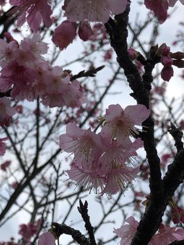

うるがいの話 ある日
最新: 桜切る馬鹿【うるがいの話 ある日】とは 一日だけのプログです
『うるがいの話』の最新一日だけのプログで、通信料が少なく経済的だ。カニの画像をクリックすると全ての日付が載る『うるがいの話』サイトを表示します
|
|
【うるがいの話】 うるがい(ｳﾙｶﾞｲ urugai)とは、『もずくがに』の名前でとても大きくなります。 |
|---|---|
|
|
【カミマヤーの話】 猫のことを方言でマヤーといいます。カミマヤー（kamimayaa）とは、神の猫のことです。 |
|
【タナガーの話】 たながー（ﾀﾅｶﾞｰtanagaa）とは手長えびのことで、何種類かあり大きいのは車 エビぐらいになります。 |

|
【ぶながぁの話】 ぶながー(bunagaa)とは、赤い髪の毛、赤い身体、そして身長は１ｍ２０ｃｍ ぐらい、川の蟹を食べているの目撃された。場所は沖縄県国頭郡大宜味村のと ある村僕の隣近所に住んでいる爺さんから、聞いた話です。 |
|
|
【ギーマの話】 ギーマ(giima)とは、山原の里山に咲くスズランに似た、 花を付けます。実は食べられます、 気が付くと口の周りが紫になっています。 |
2022年02月02日 (水）桜切る馬鹿
16:41
『桜切る馬鹿、梅切らぬ馬鹿ってご存知？』、うん知っている。去年剪定した
桜の木は、ほとんど花を付けず葉桜になりつつある。桜の枝は切っていけない
と山原でも言われている、だけど近所ではバシバシ桜の剪定をしているのを見
かけた。確かに翌年は、全然花を付けないが、だんだん元に戻っていく。山原
と違ってここでは剪定しないと近所に迷惑をかけてしまう、なかなか調和は難
しいのだ。

今朝、スラックをみると、今朝の００：３０に
『録画希望です』
と書き込んでいる人がいた。スラックで上がってくるメッセージなどを見てい
ないようだ。ふと、この人は先週募集を締め切っているのに、忙しい、もしく
はスラックに全く不慣れの初心者、閉め切られているのを分かっていながらド
サクサに紛れて書き込んでいる。うふ、ニヤニヤ、録画研修は月曜日から始ま
る予定だが、いまだに動きが無い。昨日、副業を斡旋している会社より
＜事務局スタッフ募集のお知らせ＞
【概要】
事務局業務のボトルネック化を解消するために事務局業務に参加していただく
方を募集します。
【募集人員】
1,2名
【契約期間】
1年を予定（試用期間は1,2か月）
・・・あとは割愛
スラックに参加しているアカウントが１，１９９、そのうち私達の令和３年度
【概要】
事務局業務のボトルネック化を解消するために事務局業務に参加していただく
方を募集します。
【募集人員】
1,2名
【契約期間】
1年を予定（試用期間は1,2か月）
・・・あとは割愛
那覇市が１１９である。凄い数だ
１６時３６分 ビットコインの総資産 ￥１２、７０４↓